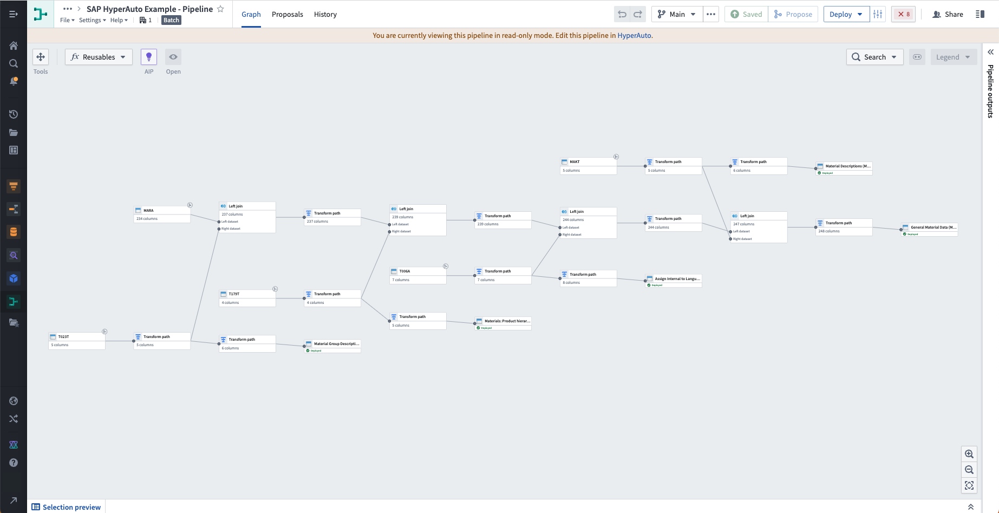

:::callout{theme="success" title="Introducing HyperAuto V2"} HyperAuto V2 brings a new user experience and increased performance, including real-time streaming support, to provide even more useful application-ready data in just moments.
Currently, HyperAuto V2 supports SAP data sources only. :::
Palantir HyperAuto â also known as Software-Defined Data Integration, or SDDI â is a suite of capabilities designed to provide end-to-end data integration capabilities out of the box on top of the most common and mission-critical systems at organizations. A fast track to digital transformation, HyperAuto empowers you to autonomously create valuable workflows with ERP, CRM, and other organization-critical data.
With HyperAuto, you can sync, integrate, and structure data to immediately build new workflows on top of major data systems in a matter of minutes. The most widely used systems supported by HyperAuto are:

HyperAuto V1 supports a wide array of ERP and CRM source systems and contains comprehensive features such as built-in intelligence via Derived Elements and automated Ontology creation. V1 will continue to be available and supported until all source types and necessary features are made available in HyperAuto V2.
Updates to HyperAuto V1 will be communicated with advanced notice.
For more information, see HyperAuto V1 documentation.